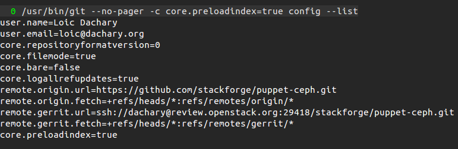
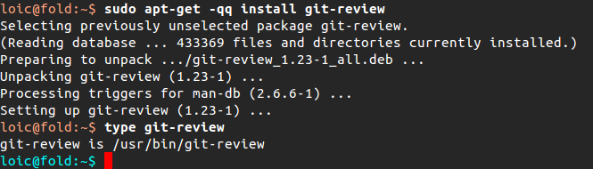
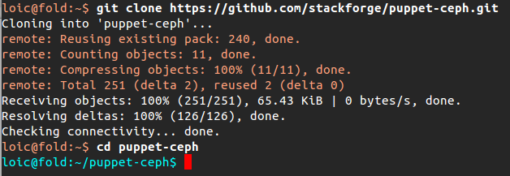
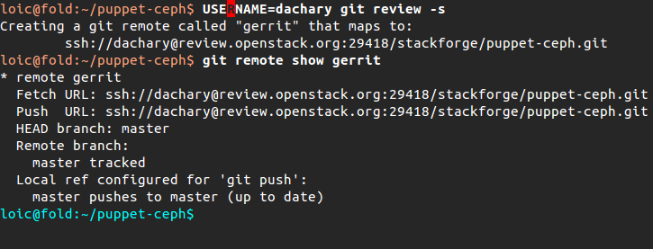
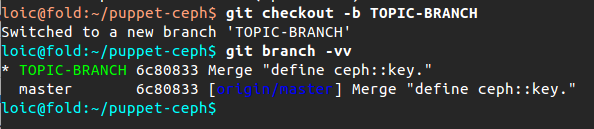
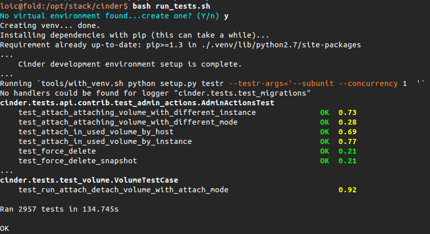
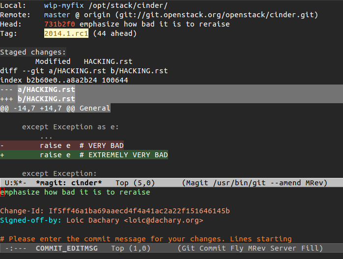
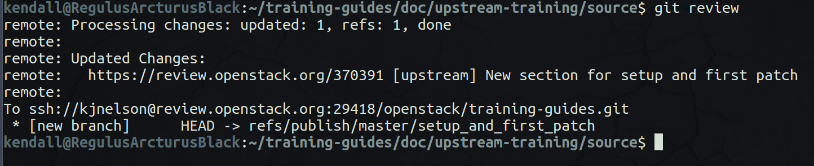

Setup & First Patch

git config

Install git review
- apt / yum / pip install … git review

git clone

git review -s

git checkout -b TOPIC-BRANCH

running unit tests

git commit --amend

git review

Exercise
- Configure your workspace
- git config
- install git review
- git clone
- git review -s
- Create & push a Work in Progress (WIP) to the sandbox
- git checkout -b <branch_name>
- Run unit tests
- Make changes
- Run unit tests
- Add files
- Commit files and write commit message
- git review